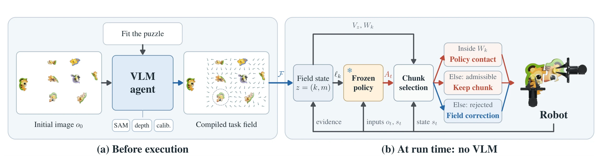

Bridging Agentic Reasoning and Dexterous Policies
via Compiled Task Fields
1Shanghai Jiao Tong University 2Xiaomi Robotics
†Corresponding authors
A VLM agent compiles a task field once before execution. At run time, the field evaluates and steers every action chunk of a frozen policy—with zero VLM queries in the control loop.
Everyday manipulation requires both reasoning and dexterity. A robot must interpret vague instructions, distinguish targets from similar distractors, keep track of progress, and plan spatial arrangements, while also performing precise, coordinated actions. Vision-language model (VLM) agents handle the reasoning well, but they are too slow and coarse for real-time control, whereas visuomotor policies show the opposite strengths. We present COMPASS (COMpiled Potentials for Action Selection and Steering), which bridges agentic reasoning and dexterous control through compiled task fields. Before execution, the agent reasons about the instruction and the scene, compiling its decisions into a stateful potential field over the policy's action space. At run time, the field evaluates each action chunk proposed by a frozen visuomotor policy. It keeps chunks that make progress, corrects those that deviate from the agent's decisions, and leaves the policy in full control near each target. With no agent queries in the control loop, execution remains smooth while preserving the policy's reactivity and robustness during contact-rich manipulation. On four real-world bimanual tasks, COMPASS improves the average success rate from 6.7% to 76.7%. Further experiments highlight the complementary roles of agent reasoning and policy motor skills.
We propose COMPASS, which uses compiled task fields as an interface between agentic reasoning and frozen visuomotor policies. The interface carries task decisions and memory into closed-loop execution without online VLM queries, while preserving the policy's local adaptability during contact-rich manipulation.
We conduct over 500 real-robot trials on four bimanual tasks with six agent models and four policies. COMPASS raises the average success rate from 6.7% to 76.7% and assembles a jigsaw puzzle among distractor pieces in 11/15 trials, whereas no baseline exceeds 2/15.
By comparing agent models and policies, we characterize the complementary roles of reasoning and motor skill in everyday manipulation. Strong task reasoning cannot compensate for inadequate contact skills, while precise motor execution alone does not ensure correct task completion.

Given the instruction and initial observation, the VLM agent reasons once before execution to compile a stateful task field—combining an action-space potential with a discrete stage and memory state .
Outside the target workspace, the field evaluates each action chunk proposed by the frozen policy, executing admissible chunks and replacing deviating ones via bounded gradient descent on .
Within the target workspace , the policy retains full 6-DoF control for contact-rich manipulation. Stage transitions are triggered purely by measured physical evidence without online VLM queries.
Propose candidate action chunks in a 2D slice of the puzzle task field to inspect chunk selection (Eq. 3) and gradient-based field correction (Eq. 4).
denotes the stage potential (combining quadratic target attraction and non-target repulsion), is the repulsive barrier potential over non-target instances, and measures the net potential change across a chunk. Outside , a chunk is accepted iff and (Eq. 3). Inside the dashed workspace , the policy acts unconstrained unless a chunk exits (repaired via bounded projection for minor overshoots, or re-queried for larger excursions).
Side-by-side evaluation across two test layouts per task using the identical frozen policy: Base policy (left) vs. COMPASS (right). Clips are synchronized to motion onset; baseline trials terminate upon their first unrecoverable task error. Clips play automatically once scrolled into view. On pack earphone and puzzle, the inset shows a synchronized close-up camera; click it to enlarge.
Layout 1“Put the manual toothbrush, the electric toothbrush and the toothpaste in the box.”
Layout 2“Put the bread, the banana and the red pepper in the box.”
Layout 1“Pack the blue earphones and the white earphones, each into its own case.”
Layout 2“Pack the blue earphones and the white earphones, each into its own case.”
Layout 1“Pack 2 corn, 2 red peppers, 1 banana, 1 cucumber and 1 avocado into the bag.”
Layout 2“Pack 3 cucumbers and 3 mushrooms into the bag.”
Layout 1“Complete the lion puzzle using only its own pieces.”
Layout 2“Complete the strawberry puzzle using only its own pieces.”
We evaluate COMPASS on four real-world bimanual tasks, each on the same 15 random test layouts with one trial per layout. The policy is kept frozen in all experiments.
The agent grounds each requested object to its 3D instance and guides the arm through the specified sequence.
The ledger binds earbuds to their respective sets, and the field rejects 62 chunks drifting toward same-color distractors.
Although packed items are occluded inside the deep bag, the memory ledger tracks category quotas and updates non-target regions upon each confirmed release.
The agent determines the assembly sequence relative to the anchor piece while the field repels the arm from incompatible distractor pieces.
Number of successful trials out of 15 (Base policy → COMPASS, evaluated with the same frozen visuomotor policy).
Open-loop motion planning over VLM value maps lacks the contact precision required to insert an earbud or fit a puzzle piece.
At ~25 s per online VLM query, closed-loop intervention stalls execution and exhausts the 20-minute trial timeout.
Releasing control after a single pre-grasp waypoint leaves the policy unconstrained against nearby distractors and already-counted items.
On count fruit, COMPASS matches the base policy's execution time per completed sub-goal while raising success from 1/15 to 12/15.
GPT-6-Astra and GPT-6.1-Sol achieve 11/15 and 10/15 success on pack earphone, whereas weaker models struggle with fine instance bindings and goal placement.
Because the field governs pre-contact approach and delegates grasping and insertion to the policy, pairing COMPASS with ACT (0/15) fails during physical contact.
| Agent Model (Pack earphone, XR1 policy) | Success Rate | API Cost / Compilation |
|---|
Updating text prompts at stage transitions does not constrain low-level execution against drifting toward nearby distractors.
@article{han2026compass,
title = {{COMPASS}: Bridging Agentic Reasoning and Dexterous Policies via Compiled Task Fields},
author = {Han, Xiaoshen and Cao, Jiahang and Li, Xinghang and Kong, Tao and Lai, Hang and Zhang, Weinan},
journal = {arXiv preprint arXiv:XXXX.XXXXX},
year = {2026}
}